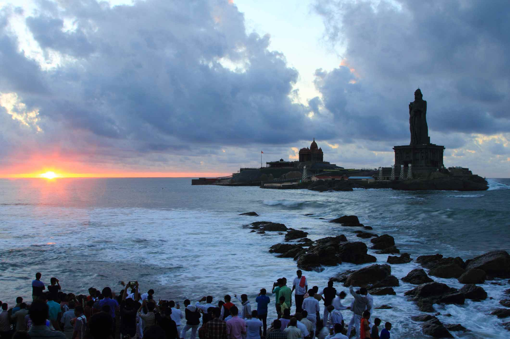
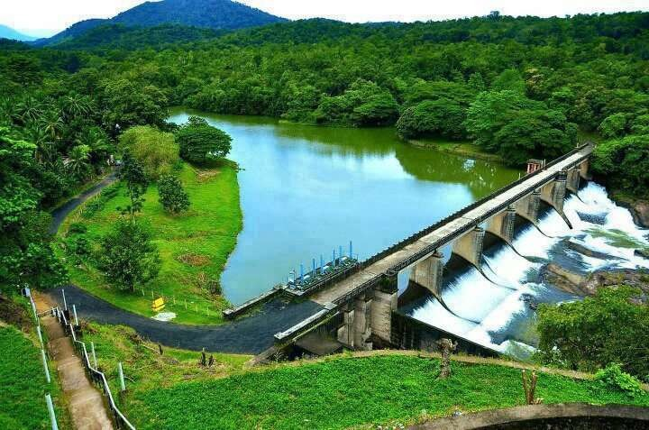
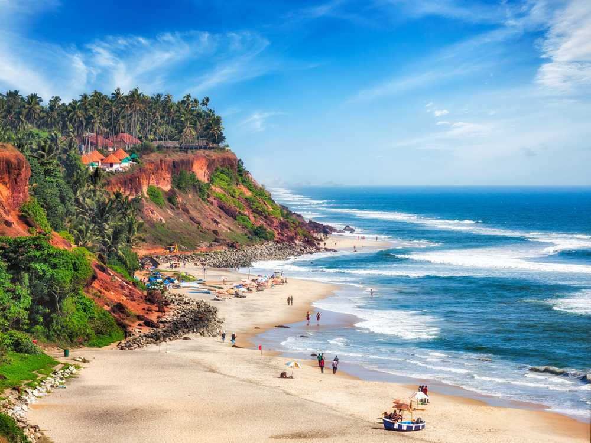
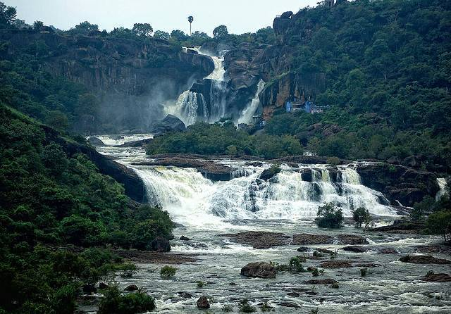
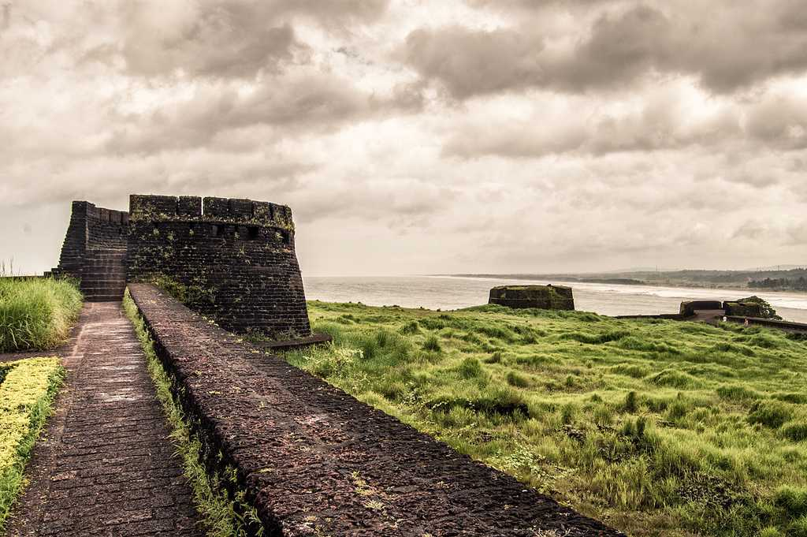

This webpage contains the different places to which I have travelled. This webpage contains some pictures of these places.

Kanyakumari, where the Arabian Sea, Bay of Bengal, and Indian Ocean meet, offers breathtaking sunrise and sunset views that paint the horizon in gold and crimson. Its serene beaches, historic Vivekananda Rock Memorial, and vibrant coastal culture make it a soul-stirring destination for travelers.

Thenmala, India's first planned eco-tourism destination, is a lush haven of forests, waterfalls, and winding trails perfect for nature lovers. From the tranquil dam reservoir to the adventurous canopy walk, it blends serenity with a touch of thrill in every corner.

Varkala, with its dramatic red cliffs overlooking the Arabian Sea, offers a rare blend of beach bliss and spiritual charm. Its golden sands, natural springs, and cliffside cafés create the perfect backdrop for both relaxation and soulful reflection.

Tirunelveli, famed for its rich heritage and delectable Iruttu Kadai Halwa, is a city where tradition and flavor go hand in hand. From the majestic Nellaiappar Temple to the serene Tamirabarani River, it offers a timeless glimpse into Tamil Nadu'0s cultural heart.

Bekal Fort, standing tall on Kerala's Malabar coast, offers sweeping views of the Arabian Sea through its ancient laterite walls. Its blend of history, coastal beauty, and cinematic charm makes it a perfect spot for both explorers and dreamers.
.jpg)
Jatayu Earth Center, home to the world's largest bird sculpture, beautifully blends mythology with adventure atop a scenic hill in Kerala. Visitors can explore its storytelling museum, enjoy panoramic views, and indulge in thrilling activities like zip-lining and rock climbing.